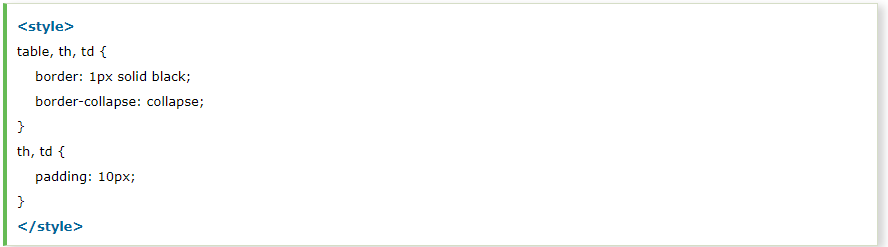

We can apply style on HTML tables for better look and feel. There are some CSS properties that are widely used in designing table using CSS:
We can set border for the table, th and td tags using the CSS border property.

Output:
By the help of border-collapse property, we can collapse all borders in one border only.
Output:
We can specify padding for table header and table data using the CSS padding property.
Output:
We can style even and odd table cells for better look and feel. In this code, we are displaying different background colors on even and odd cells. Moreover, we have changed the background-color and color of
CSS code: